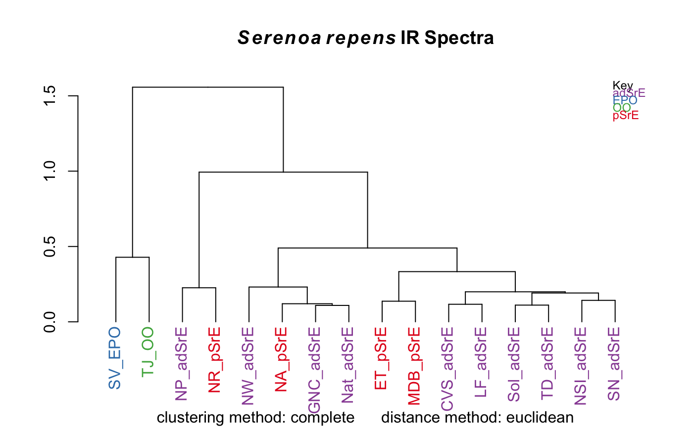

hcaSpectra.RdA wrapper which carries out HCA and plots a dendrogram colored by the
information in a Spectra object. Many methods for computing
the clusters and distances are available.
hcaSpectra(spectra, c.method = "complete", d.method = "euclidean", use.sym = FALSE, leg.loc = "topright", ...)
| spectra | An object of S3 class |
|---|---|
| c.method | A character string describing the clustering method; must be
acceptable to |
| d.method | A character string describing the distance calculation
method; must be acceptable as a method in |
| use.sym | A logical; if true, use no color and use lower-case letters to indicate group membership. |
| leg.loc | Character; if |
| … | Other parameters to be passed to the plotting functions. |
A list, containing an object of class hclust and an
object of class dendrogram. The side effect is a plot.
hclust for the underlying function.
hcaScores for similar analysis of PCA scores from a
Spectra object. Additional documentation at
https://bryanhanson.github.io/ChemoSpec/
data(SrE.IR) myt <- expression(bolditalic(Serenoa)~bolditalic(repens)~bold(IR~Spectra)) res <- hcaSpectra(SrE.IR, main = myt)